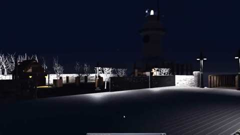

Project Case Study
In the Dark
A university project that presents a horror environment as a first-person walkthrough, using level layout and lighting to demonstrate how the environment's assets create an atmospheric space.
Environment design
The experience moves the camera through the environment so viewers can explore its layout and see how the setting works as a horror scene. The lighting includes a rotating light effect to add movement and atmosphere.

My contribution
I handled the map layout, level design and development of the walkthrough, including its rotating light effect.